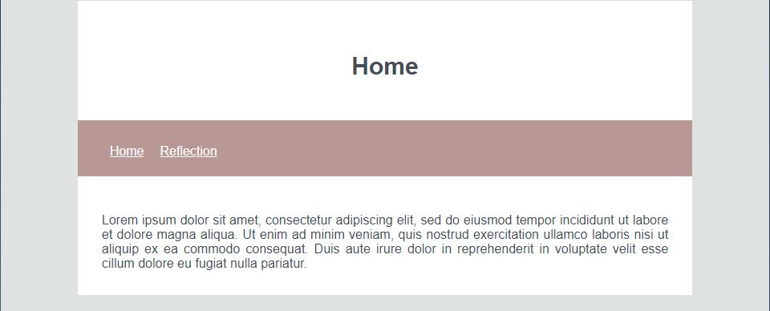

For the first micro-assignment, I chose the home page of the KidsCan website to emulate. It was a fairly straightforward page and I only emulated the top half of the page. I found this MA to be very helpful in refreshing my prior knowledge of HTML and CSS and I found that I also had a chance to explore aligning multiple images which I had not done before. I struggled the most with aligning elements and in particular images. I was able to make a single image centre but I could not get the row of images to start in the centre. I also had trouble getting the text in the footer to format correctly.
Reflections
Blog entrys:
First Micro-Assignment
Date posted: Tuesday 21st July 2020

Creating blog
Date posted: Thursday 23rd July 2020

I started making the main elements of my blog today, following the wireframes that I created on Figma. So far I have created the nav and linked the two pages together. I have added the main title to each page to make it easier to distinguish which page you are currently on. My next steps would be to continue to develop my wireframes to include a couple of different templates for different blog posts. This will allow me to have a more flexible design to work with when I have different sized pictures and different blocks of text.
Flexbox
Date posted: Tuesday 28th July 2020


In tutorial 5, I learnt how to use flexbox to position items on the screen. I had the most trouble working out how to align the table using flex-direction and stretch but I was able to get it to work after I realised I had not defined the flex container on the table class. Flexbox is a very helpful tool that I will continue to use in future projects as it is able to format elements in a lot of different ways.
Responsive Wireframes
Date posted: Thursday 30th July 2020

In today's class, I focused on creating wireframes for the mobile and tablet view of my blog. As my blog will be responsive, I needed to plan what the different page sizes would look like. Responsiveness is an important aspect to consider as it allows people who may be viewing my blog to use different devices and still receive the designed output I have created.
Assignment 1 progress
Date posted: Tuesday 4th August 2020

I continued to work on developing my first concept wireframe for Assignment 1 in class today. By breaking down the user's needs and motivations, I was able to get a clear picture on how many pages I would be needing to create and what needed to be on them. For this concept, I was focusing on aligning everything and having a simple, clean layout that would match the clean, fresh mood board I created.
Grid tutorial
Date posted: Thursday 6th August 2020


Today we did an exercise on grid layouts and had to implement them to work with smaller page sizes. I found this exercise to be quite challenging and was only able to get the 1st desktop and mobile wireframe to work as it was supposed to. This is something that I want to continue to develop and keep working on to get the different grid layouts to work. I think that using a grid is a really important part of web design and a great skill to have.
JavaScript introduction
Date posted: Tuesday 11th August 2020


I have previously worked with JavaScript however, I did not know how to implement it into an HTML document. Once I had implemented my images and created the buttons following the example I was initially unsure about what part of the code needed to go into the function. I learnt how to make buttons, how to link the js file to the HTML file through the script tag and what parts of the code go into the function. I am excited to learn more about JavaScript and the different features it can create.
Darkmode tutorial
Date posted: Thursday 13th August 2020


I learnt how to use JavaScript in a more in depth way to manipulate the display of a web page. I enjoyed building on what we learnt in the last tutorial and applying it to a more interesting feature. I found it challenging to work out which parts of my HTML needed to be included in the functions but after I had changed my class names to be more clear it was easier to work out. I found it worked better for me to code the first section first to include the dark mode and then work through the rest of the website when I had gained a better understanding of how it all worked.
Assignment 2 Group work
Date posted: Tuesday 1st September 2020
When making the pitch to my group I found that it was important to try and explain my idea in a clear simple way to best express my concept in a way that everyone could understand. Scope was one of the main points that my group discussed when considering each other's pitches. While everyone had a good pitch, some ideas were not feasible for our skill level or time restraint. Collectively we chose the pitch that we thought best suited the restraints of the project and was an idea that we were all interested in. Once we had chosen our project idea, we had to consider the direction we wanted the project to go in order to narrow it down to a manageable concept. We soon realised that a website for small businesses could have a very large scope and audience base which would be unrealistic for us to try and tackle. Therefore, we narrowed it down to hospitality businesses that meet our criteria of local, sustainable/environmentally friendly, cost efficient, and charitable.